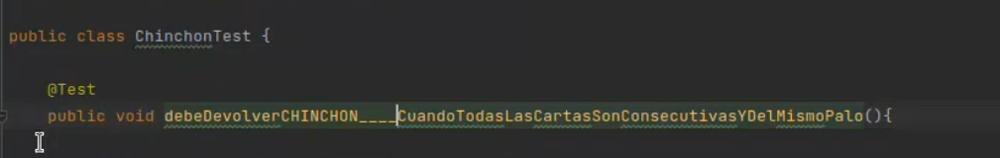
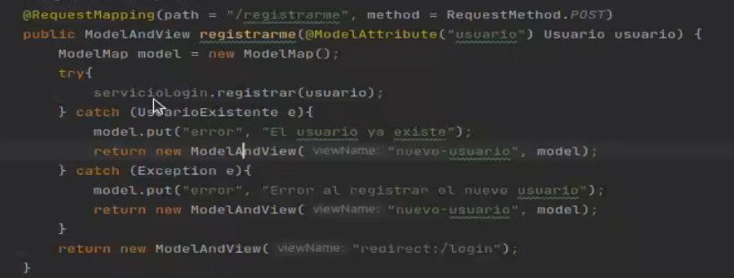
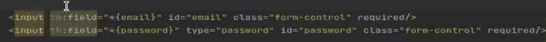

Taller web 1
Clase 1: Integración continua
La integración continua (CI) es una práctica de software que requiere la confirmación de código de forma periódica en un repositorio compartido. La confirmación de código con mayor frecuencia detecta errores más rápido y reduce la cantidad de código que un desarrollador necesita depurar al encontrar la fuente de un error. Las actualizaciones frecuentes de código facilitan también la fusión de cambios de diferentes miembros de un equipo de desarrollo de software. Esto es excelente para los desarrolladores, que pueden dedicar más tiempo a escribir el código y menos tiempo a depurar errores o resolver conflictos de fusión.
Es el Proceso de compilar el código y correr las pruebas cuando mergeas tu rama.
Pipeline: Serie de pasos que se debe dar antes de desplegar un ambiente.
Maven
El principal objectivo de Maven es permitir a los desarrolladores comprender el
estado del desarrollo en un periodo de tiempo mas corto. Además, ayuda en los
siguientes áreas:
■ Hacer el proceso de construcción más fácil.
■ Proveer una construcción uniforme del sistema.
■ Proveer información de calidad al proyecto.
■ Animar a mejor las prácticas de desarrollo
Fases de maven
■ validate - valida que el proyecto es correcto y toda la información necesaria está
disponible
■ compile - compila el código fuente del proyecto
■ test - Ejecuta las pruebas automatizadas sobre el código previamente compilado
■ package - Empaqueta el código compilado en un formato distribuible, por ejemplo .jar
■ verify - Ejecuta pruebas de integración
■ install - Instala el paquete en un repositorio local para ser usado como dependencia en
otro proyecto.
■ deploy - Instala el paquete en un repositorio remoto para ser compartido.
Comandos
mvn compile: Compila el proyecto
mvn clean jetty:run: Limpia los archivos que se generaron y corre el servidor jetty
mvn clean: Limpia los archivos que se generaron
mvn test: Ejecuta los tests
Como cambiar el puerto a Jetty: <httpConector> <port>8080</port></httpConector> esto va en el pom.xml, en plugin, en configuration.
Clase 2: TDD y Thymeleaf
@Test: Notación para prueba unitaria
El nombre debe ser descriptivo y debe decir que retorna y cuando
Fases de la prueba
Given: prepara el escenario, los datos que van a ser usados.
When: Es la ejecucion
Then: Es la validación de los tests
Una vez hecho un test validando que algo funciona, hay que validar el caso contrario. Ya que al principio se espera hacer lo minimo y necesario para que pase el test y luego ir refactorizando el código.
git fetch: me trae las ramas creadas desde github que no tengo localmente.
git branch --all: muestra todas las ramas
Arquitectura de Capas
Github folder: Configuracion de workflows
Target folder: Las clases compiladas del proyecto
.gitignore: Archivo de configuración que va a contener los nombres de los archivos que vamos a omitir al subir a github.
pom.xml: Es el archivo que va a leer Maven para saber como va a manejar el proyecto, que dependencias descargar
src-> main folder: Es el código productivo, la lógica de la aplicación
src-> main-> java: Contiene el código Java
src-> main-> resources: Contiene archivos estáticos, archivos que no van a ser modificados y que van a ser útiles para el proyecto, por ejemplo una BD que se usa para agregar un usuario o imagenes fijas de una presentación o logo.
src-> main-> webapp: Acá se encuentra el código que nos va a generar el frontend.
src-> main-> webapp-> resources: Es para los archivos .css y .js
src-> main-> webapp-> WEB-INF: Archivos HTML generados para las vistas
subcarpeta dominio: Llamada capa de Servicios, va la lógica que tiene que hacer nuestro servicio con la lógica del frontend
subcarpeta infraestructura: Va el código para conectarse efectivamente a la BD que estemos usando.
subcarpeta presentación: Contiene el controlador (Capa que tiene muchos metodos y cada uno tiene asociado la ruta que esta escuchando, indica el HTML que se va a mostrar). La clase tiene una anotación @Controller para especificar que es un controlador.
En los modelos viajan los objetos que envia Thymeleaf
subcarpeta config SpringWebConfig: Indica como tienen que ser tratados los archivos de Java. Algunos van a ser controladores que escuchan las peticiones, otros que van a ser repositorios que se conectan con la BD, otros que van a ser servicios que validen la lógica de negocios. Spring los va a ir instanciando a medida que los necesita. Usa para esto la anotación @ComponentScan
subcarpeta config HibernateConfig:
subcarpeta config DatabaseInitializationConfig:
src-> test folder: Son los tests que verifican que la aplicación no falle
Thymeleaf
Thymeleaf se va a encargar de enlazar el atributo th:field del input con el objeto java Email y guarda su valor en ese objeto.
Documentación de Thymeleaf